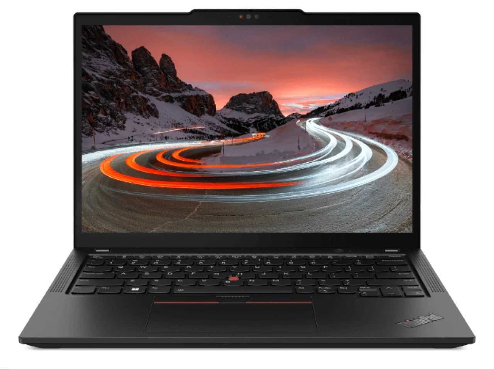

ThinkPad T480

Seri T Terakhir
Entah apa yang ada dibenak para petinggi Lenovo. Mereka mengubah sama sekali jajaran ThinkPad seri T setelah ThinkPad T480. Lenovo ThinkPad T490—menjadi seperti seri “s” yang kian tipis dengan hanya 1 slot RAM yang dapat kita ganti. Dia juga menjadi yang pertama dengan baterai yang tidak dapat dilepas-pasang. Begitu juga dengan slot penyimpanan 2,5 inci, berganti sepenuhnya dengan slot M.2. Belum lagi, slot SD Card kini menciut menjadi Micro SD. Lenovo ThinkPad T490 bukanlah ThinkPad seri T yang kita semua kenal. Berubah sepenuhnya. Bahkan sampai ke lubang keluar panas yang kini berada di sisi sebelah kanan (tangan kanan). Awalnya saya menduga, Lenovo akan memperbaiki “kesalahan” itu pada seri berikutnya, ThinkPad T14. Seperti saat generasi 40 dulu. Kenyataanya tidak. Lenovo maju terus dengan seri T yang kian tipis dan minim segala. Bahkan, pada seri paling baru, ThinkPad T14 gen 3 sudah tidak ada lagi slot SSD tambahan dan Micro SD!
ThinkPad dengan Intel Kaby Lake-R
CPU Intel Gen 8. Betul, Intel sudah merilis prosesor generasi ke-12. Terasa jauh sekali jaraknya. Tapi tunggu dulu, Intel Core-ULV i5 generasi ke-8 sudah memiliki 4 inti pada prosesornya. Sesuatu yang bahkan tidak dimiliki Intel Core i7-7600U. Dan kabar baiknya, Intel gen 8 akan mendapatkan peningkatan sistem operasi hingga windows 11.
2 Slot RAM DDR4
RAM DDR4. Betul juga sudah ada DDR5, tapi bahkan X1 Carbon gen 6 saja, masih menggunakan RAM LPDDR3 yang tertanam bersama motherboard-nya! Dan yang terpenting, slot RAM T480 ada 2, yang dapat kita maksimalkan menjadi 32 GB atau mungkin hingga 64 GB!